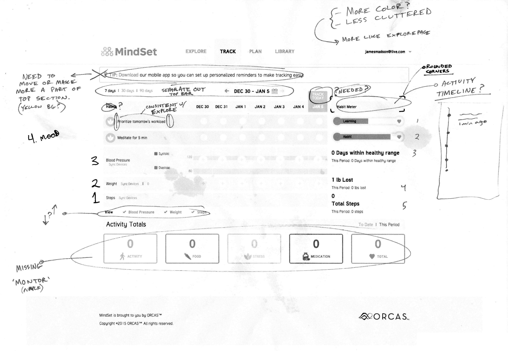
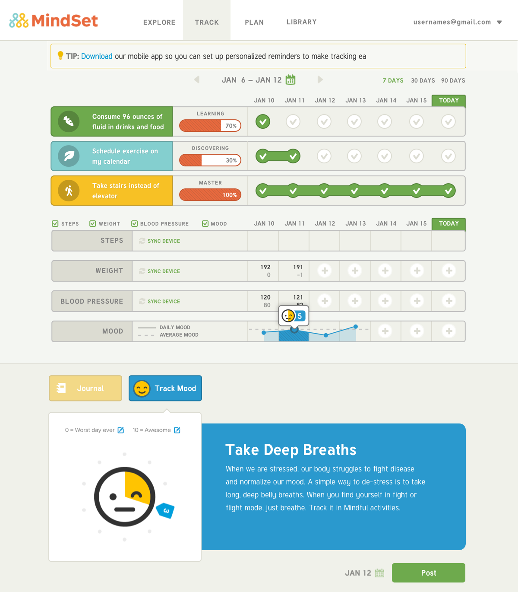
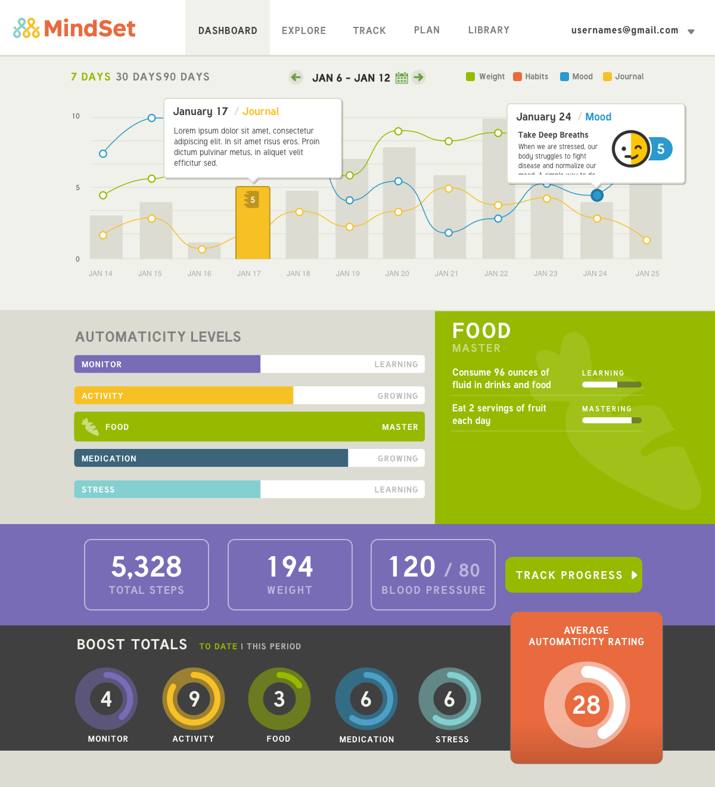

A science-based responsive web app to help users with chronic conditions create healthy lifestyle habits.
Client:
ORCAS
Role:
User Experience, User Interface, Prototype
Scope:
Concept, Web App
I am fortunate to have had a relationship with ORCAS for many years, starting back when I was their lead product designer. In that role I focused on creating a habit-based health app with my team, as well as branding, writing and reviewing production front-end code.
Fast forward to several years later, and I was able to collaborate with their team in creating an even richer experience for users tracking their health and well-being through MindSet.
Mindset's dashboard needed new additions, like blood pressure monitoring, step tracking and new habit boosts, which are quick one-time actions to help users feel progressive toward their goal of a healthier lifestyle.
These new feature additions were recommended by the scientific research team, and needed to be integrated into the existing interface. Using the six-up sketching exercise, I was able to explore and find the best solutions for the user experience. To present these ideas I produced prototypes that the team could access on their own devices.
Prototyping the app’s new features allowed me to quickly communicate the experience to the team and have it ready to test with actual users. Each person could open a link and interact with the new features on their own phones, computer or other device. Through this process we were able to learn what did and didn’t work and iterate quickly toward a finished design.
"The response was extremely positive. People thought the design was clean and attractive and easy to understand."
– Sara Taillon, ORCAS CTO